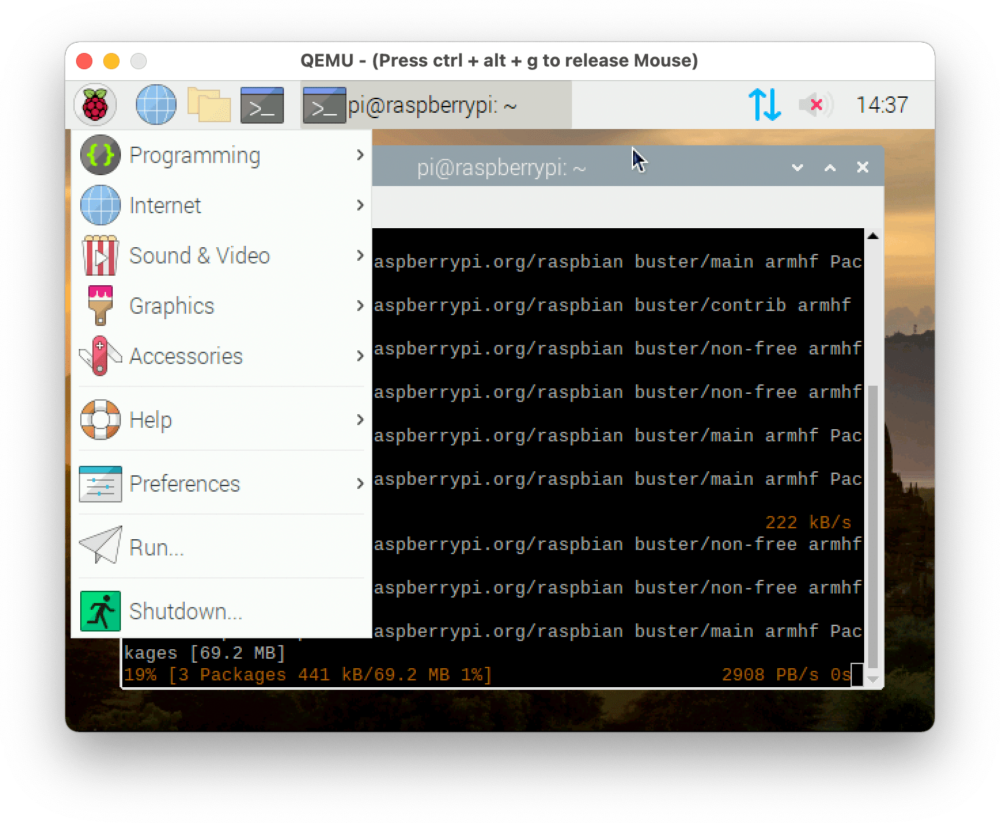

Want to experiment with writing or running software on a raspberry pi, but don't have a pi? You can create a virtual pi on your PC using the Qemu VM software.

Note: Depending on your hardware, this will likely be much slower than a real pi.
Prerequisites
You need a few things first:
- Qemu. Download the version for your platform here: Qemu downloads
-
Rasbian. Dwnload the version of raspbian you want to run from Raspbian Downloads. In this tutorial, I am using
2020-02-14-raspbian-buster. You should have a .img file after extracting it.
Method 1: versatilepb
The Qemu versatilepb machine type allows you to construct a generic pi-like device. While slow and limited to 1 virtual core and 256mb of RAM, it is the most likely to work. You need to download two files:- A versatilepb kernel. Download one from GitHub. I recommend the Stretch kernel even if using Buster, the Buster kernel has some stability issues as the time of writing.
- The Qemu DTB file. You can get it here.
After downloading those files, create a startup script with the following contents:
#!/bin/sh
# Edit these to match the files you downloaded
KERNEL=kernel-qemu-4.14.79-stretch
DTB=versatile-pb-buster-5.4.51.dtb
DRIVE=2020-02-13-raspbian-buster.img
qemu-system-arm -kernel ${KERNEL} \
-cpu arm1176 -M versatilepb \
-dtb ${DTB} \
-serial stdio -append "root=/dev/sda2 panic=1 rootfstype=ext4 rw" \
-drive "file=${DRIVE},index=0,media=disk,format=raw" \
-net user,hostfwd=tcp::5022-:22 -net nic \
Afterwards, simply execute the script: ./start.sh
Method 2: raspi2 and raspi3
Qemu has a dedicated device for the raspi2 and raspi3. These devices more closely model the real pi boards, but they also may have unpredictable stability and performance issues, especially in graphics mode.
To use these devices, you must extract some files from the raspbian img.
-
The kernel. For raspi2, copy
kernel7.imgorkernel7l.imgout of the .img. For raspi3, usekernel8.img -
The DTB. For raspi2, copy
bcm2710-rpi-3-b-plus.dtbout of the .img. For raspi3, usebcm2710-rpi-3-b-plus.dtb
The commands for both devices are similar.
Raspberry Pi 2 (32 bit):
#!/bin/sh
# Edit these to match the files you downloaded
KERNEL=kernel7.img
DRIVE=2020-02-13-raspbian-buster.img
DTB=bcm2710-rpi-3-b-plus.dtb
qemu-system-arm -M raspi2 -kernel ${KERNEL} -dtb ${DTB} -sd ${DRIVE} -append "console=ttyAMA0 root=/dev/mmcblk0p2 rw rootwait rootfstype=ext4" -usb -device usb-mouse -device usb-kbd -netdev user,id=net0,hostfwd=tcp::5555-:22
#!/bin/sh
# Edit these to match the files you downloaded
KERNEL=kernel8.img
DRIVE=2020-02-13-raspbian-buster.img
DTB=bcm2710-rpi-3-b-plus.dtb
qemu-system-aarch64 -M raspi3 -kernel ${KERNEL} -dtb ${DTB} -sd ${DRIVE} -append "console=ttyAMA0 root=/dev/mmcblk0p2 rw rootwait rootfstype=ext4" -usb -device usb-mouse -device usb-kbd -netdev user,id=net0,hostfwd=tcp::5555-:22
To launch in headless mode, add the -nographic argument.
If the command fails complaining about the size of the image not being a power of 2, simply run the command it suggests:
qemu-img resize 2020-02-13-raspbian-buster.img 8G, then rerun the qemu command.